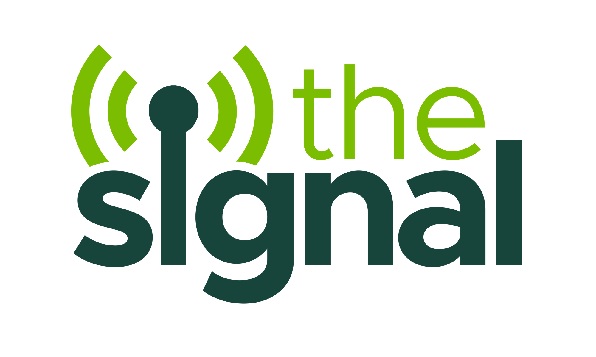
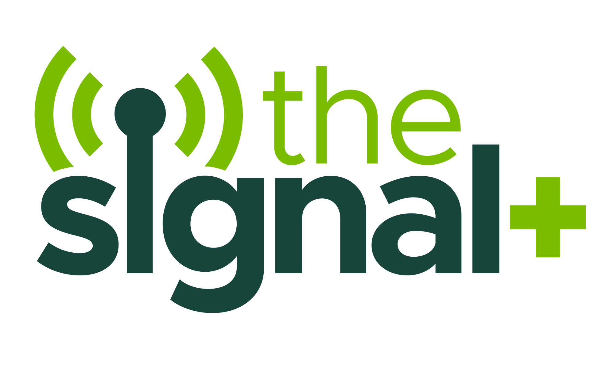
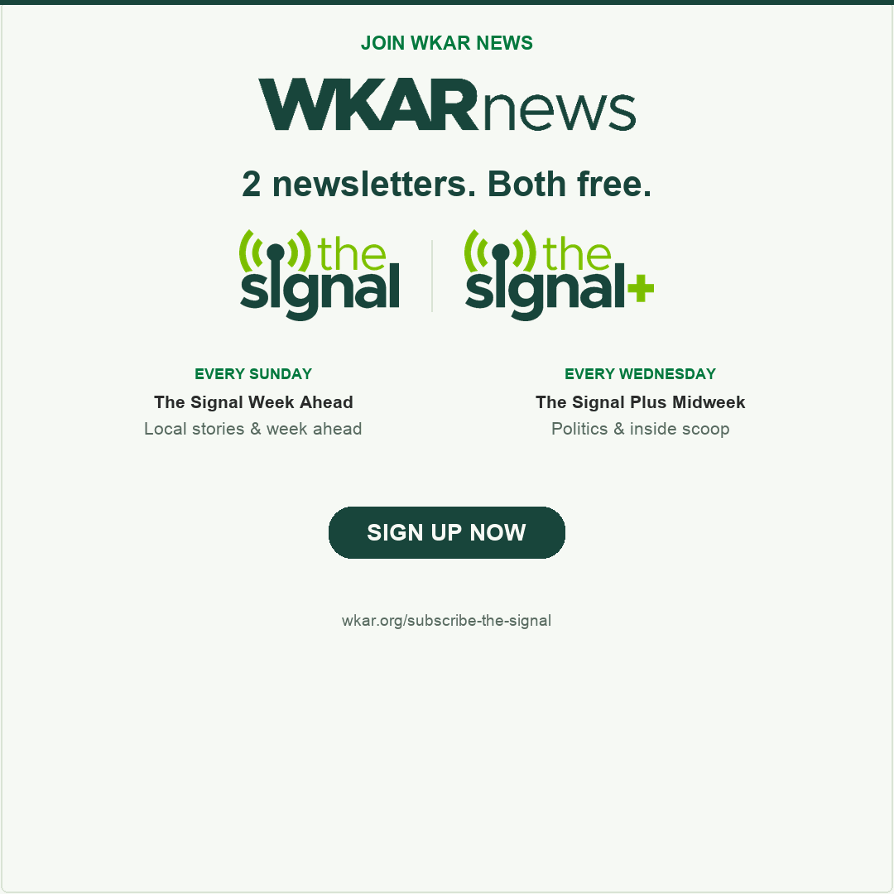
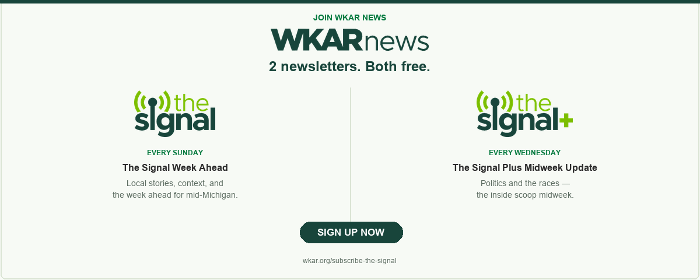
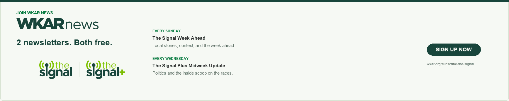

Conceived · Structured · Launched · Systematized
The week ahead, not the week behind.
The Signal is a weekly briefing for mid-Michigan, launched February 1, 2026 and sent every Sunday morning since. I identified the audience opportunity, conceived the product, shaped its identity and editorial architecture, and led a three-week build. Then I wrote the contribution model and module system that let a small newsroom produce it consistently, and extend it into The Signal+ that July.
Every edition is built around named journalists: their beats, their voices, their faces. That is not decoration. It is the reason people open it.
I identified the audience opportunity, conceived The Signal’s identity and editorial architecture, and led a three-week build. Then I wrote the module and contribution system that sustains the Sunday edition and extended it into The Signal+ without new headcount. Mailchimp, bot-filtered and excluding resends: 30 Sunday sends at 56.5% opens and 8.4% clicks; four Signal+ sends at 55.3% opens and 4.0% clicks.


In-house identity, built at WKAR. The Signal, February 2026. The Signal+, July 2026.
56.5%
Sunday Signal open rate across 30 original sends
≈ 1.8× the media-publisher median
8.4%
Click rate, the number Apple’s privacy changes cannot inflate
≈ 7× the media-publisher median
14.9%
Clicks per unique open, the cleanest comparison available
≈ 3.8× the media-publisher median
4
Original Signal+ Wednesday editions
55.3% opens · 4.0% clicks
The opportunity
No single place to find out what the week ahead looks like.
01 · Conceived
The idea was mine: a Sunday briefing that told mid-Michigan what its week would look like.
02 · Structured
I defined the identity, voice, module system and repeatable editorial cadence.
03 · Launched
The first edition shipped in a three-week build cycle, with no additional headcount.
04 · Systematized
I wrote Producing The Signal 101, the operating manual the newsroom runs on.
The edition · Sunday, August 9, 2026
Seven named journalists in one edition.
Politics, arts, classical, education, and a reporter sent to a town unannounced to see what she finds. That breadth is the product, and it draws on the whole WKAR operation, not just the newsroom. Every module carries a byline, a headshot, a beat and a reason to click. Nothing below is recreated or mocked up. These are captures of the edition as sent.


That breadth is what a small organization can actually sustain, but only when the system is written down.
Performance
The clicks are the story.
Open rates industry-wide are inflated by Apple Mail Privacy Protection. Clicks are not. So the click and click-to-open numbers are the ones I lead with, and they are where The Signal separates most.
Open rate
Click rate
Click-to-open
30
Sunday sends
49,084
Sunday recipients
4
Signal+ sends
6,702
Signal+ recipients
Mailchimp bot-filtered and recipient-weighted. Sunday Signal: 30 original sends, February 1 to August 23, 2026. Signal+: four original Wednesday sends, July 29 to August 19, 2026. Resends and the Signal+ opt-in invitation are excluded. Benchmarks: Omeda Newsletter Benchmark Report for Media, H1 2026, showing 31.6% open, 1.16% click and 3.8% click-to-open medians across 1.95 billion sends.
The system behind it
Producing The Signal 101
I wrote the operating manual: who contributes what, when it is due, how a module is structured, how the voice works, and how the edition gets assembled and sent. The goal was a product the team could sustain through vacations, staffing changes and difficult weeks.
Contribution model
Named module owners, standing deadlines, one assembler on rotation.
Module structure
Every unit carries a byline, a headshot, a beat and a reason to click.
Freelance layer
A contribution model that helped protect reporting capacity after federal funding cuts.
Cadence
Sunday briefing, Wednesday midweek update, one shared production spine.
The extension · launched July 2026
The Signal+
A free Wednesday political briefing launched July 29, 2026, built on the same production spine. Across its first four original editions, Signal+ averaged 55.3% opens and 4.0% clicks. It is a young product, disclosed as such, but proof that the system extends without new headcount.


Distribution is editorial work
A product needs a path to its audience.
Twelve promotional units supported launch and ongoing distribution across IAB display, social, site banners, sidebars and studio screens. Getting eyes on the work is editorial work, not an afterthought.



The product is not the launch. It is the system that keeps it moving.